New Senior School Biology Practical Activity & Work Book Two
Chapter
4
GASEOUS EXCHANGE AND RESPIRATORY SYSTEMS
Notable Concepts
Respiratory Structure and features that enhance gaseous exchange in them.
Gaseous exchange in lower organisms.
Ventilation and gaseous exchange in vertebrates.
Gaseous exchange in plants.
fig4.1: Cross-section through the main parts of a insect’s respiratory system
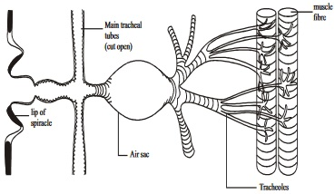
fig4.2: Diagram of a sh showing ventilation structure (gills)
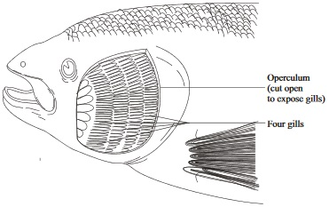
Background Information
Respiration is a gaseous exchange process by which oxygen is made available to the body cell for the release of energy from food. In higher organisms of low surface area to volume ratio, oxygen does not nd its way to the cells by simple diffusion, thus to actualize the respiratory process, that involves oxygen,
There must be intake and absorption of oxygen from the surroundings; the transport of oxygen to the various body cells and the utilization of oxygen for the release of ATP from food within the mitochondria of cells during creb’s cycle
Structures in organisms that enhance gaseous exchange process for respiration to take place are called gaseous exchange structures or respiratory structures. They include: Bodysurfaces, gills, tracheaeandlungs. A respiratory structure has some adaptative features that t them well for gaseous exchange. They include: large surface area; thin membrane at the exchange barrier, ventilation mechanism that maintains a steep diffusion gradient, and a close link between the exchange surface and the transport system or mechanism.
Gaseous Exchange in Lower Organism
Lower Organism, including simple unicellular and multicellular organisms carry out gaseous exchange process through their body surfaces. Such organisms include all protists, e.g. amoeba, sponges, Coelenterates, free living planarians etc.
Ventilation and Gaseous Exchange in some Multicellular Organism and Vertebrates
In certain multicellular animal including vertebrates, respiration can be seen as a process that occurs in three sequential processes:
1. External Respiration: Exchange of gases between the atmosphere and the blood (which takes place at the lungs in mammals)
2. Internal Respiration: Gaseous exchange between the blood and the body cells and
3. Cellular Respiration: The breaking down of food (glucose) in the mitochondria of the cell so that energy can be released
During external respiration, air or water from the external environment is continually circulated over the gaseous exchange structure. This is called ventilation.
There are certain structures in organism that bring about ventilation. These structures include lungs, Gills, trachea
Ventilation Movements in humans
fig4.3: The human lungs
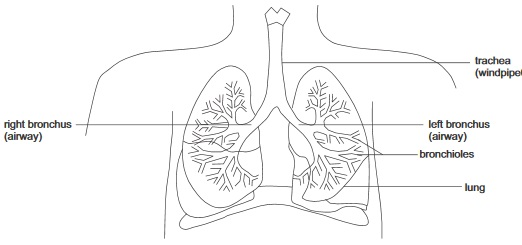
fig4.4: Alveoli
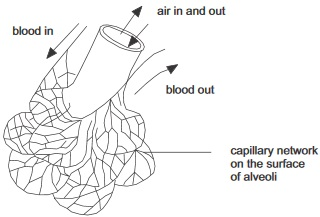
fig4.5: Internal respiration in Alveoli
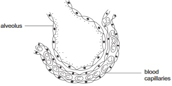
Gaseous Exchange in plants
Gaseous exchange occurs in plants for photosynthesis and cellular respiration to take place. But plants do not have specialized structures for gaseous exchange as in the case of animals, rather gases enter in and leave the plants through the Stomata at the leaves,Lenticels on old stems and roots and root hairs in younger roots
General Questions
1. Energy is vital for powering life processes of living things, but though it is contained in food, energy can not be released from food except through the process of
2. As growth is an anabolic process, respiration on the other hand is a
process
3. Respiratory structures must have gaseous exchange surfaces that are moist because
A liquid medium is required for air passage
Gaseous diffusion at respiratory structues need to our in solution
A liquid is needed to clear the respiratory tract
4. To enhance gaseous exchange process in respiratory structures, The structure needs to have a large surface area and in most animals, it must be closely linked to the
system
5. Free living at worms, annelids, sponges and coelenterates carry out gaseous exchange process through their
6. Respiratory structures in insects are the
7. In the Gills of a bony sh the gaseous exchange surface is found at the
8. During external respiration in mammals, gaseous exchange surface in lung is found at the
9. Within the thoracic cavity, each lung is surrounded by an inner and outer
which forms a water proof and air tight sac.
10. Write down the two gaseous exchange structures in amphibians through which ventilation movement occurs
and
11.An example of an animal in which oxygen diffuses directly from the gaseous exchange structure into body cells is
amoeba
fish
lizard
Carefully study the diagram below and label the parts numbered 12-18
fig4.6
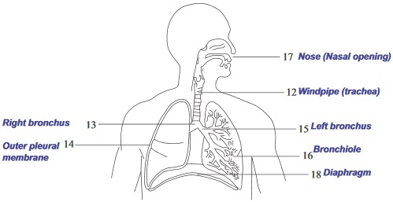
19. Write down one function of the rib during respiration
20. The trachea divides into two air passages in humans called
21. Gaseous exchange opening in the leaf surface of plants is called
, its opening and closing is controlled by
22.In stems and roots of plants, gaseous exchange can occur through the
3.Diagram of the gaseous exchange structure mechanism in plants. Label Nos 23 –24
fig4.7:
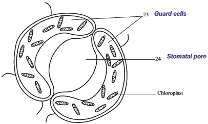
23.
24.
Expression Exercise
1a. Within the table below, write down three differences between photosynthesis and respiration
Photosynthesis
Respiration
1
1
2
2
3
3
1b. Write down a chemical equation representing the process of respiration
2a. State four ways or features that aids respiratory structures to properly carry out respiration function.
2b. Within the table below, write down the respiratory structures of each organism against it
Organisms
Respiratory or Gaseous exchange structures
Earth worm
Fish
Tadpole
Humans
Birds
Amoeba
Adult frog
Insects
3a. Label the parts indicated with the leading lines in the diagram in gure 4.8. Briey explain its role (the structure) in respiration in mammals
fig4.8:
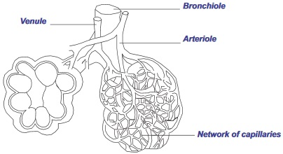
Label the parts in the diagram in figure 4.8
b. Within the table below, write down what happens to the parts of the body stated at the left side during inspiration and expiration
During inspiration
PARTS OF THE BODY
WHAT HAPPENS
Ribs
Intercostals muscles
Diaphragm
Thoracic cavity
During expiration
PARTS OF THE BODY
WHAT HAPPENS
Ribs
Intercostals muscles
Diaphragm
Thoracic cavity
4. Explain the process of controlling the opening and closing of the stomata by the guard cells
Practical Activities
1. Examining the respiratory organs of a sheep Material/Apparatus required: A freshly killed sheep, which it’s respiratory organs is carefully removed:from the larynx to the trachea and bronchi to the lungs, A hand lens and a sharp knife.
Method
Observe the breathing system or respiratory organs of the organism under investigation carefully,identify the various parts as shown in the g.4.9. Locate the part where alveoli is located and observe it with hand lens after cutting off a portion of the lungs.
Breathing Organs of the Sheep
fig4.9:
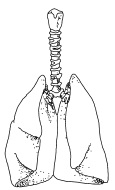
Draw a similar diagram as the one shown in g 4.9 in your practical note book based on your observations.
Questions
(i) What is the purpose of the cartilage loops at the trachea and bronchi
What type of cartilage does it belong
(ii) What type of structure did you observe at the alveoli?
What takes place at the alveoli?
(iii)State two features of the alveoli that makes it well adapted for gaseous exchange
Test of Practical Work (Alternative to Practical)
(A) Identify and label the air sac, spiracles, and tracheal in the diagram of insect’s respiratory system below which are indicated as (I), (ii) and (iii).
fig4.91A:
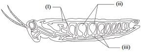
B. “The tracheal system is not linked with the transport system in insects” what is the implication of this fact in the manner oxygen is being circulated to the cells in insects.
fig4.91B:
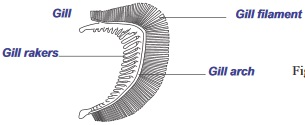
(i)Identify the diagram (B) and label its parts. Compare the diagram specimen in A and the one in BWrite down one functional difference in the manner gaseous exchange takes place using examples of organisms that respires through the structures.
Where does gaseous exchange take place in B
Write down one other organism that possesses the structure in B apart from a sh
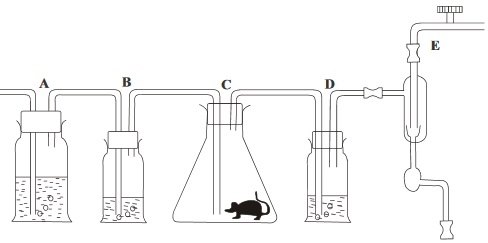
State what the above experimental set up is used for
What purpose does lime water serve in the experiment?
What is the purpose of reagent?
GASEOUS EXCHANGE AND RESPIRATORY SYSTEMSSSCE PAST QUESTIONS
June 1997 Q5 June 1999 Q2a,b,c,&d
1. Explain the signicance of homeglobin in respiration
You are provided with the following specimens bony sh as specimen 1, and a Toad or frog asspeciment J
2. (a)i. Identify specimens I and J without reasons
ii. Name the habitats of specimens I and J.
(b). State three observable structural adaptations for movement possessed by specimen J
(c)i. Name one respiratory organ of specimen I and three respiratory organ of specimen J
(ii)State four common features of the respiratory organs of specimens I and J
Photosynthesis
Respiration
1
1
2
2
3
3
4
4
(d) Cut off one of the operculum of specimen I with the scalpel or small knife to expose the respiratory organ. Make a labeled drawing about 8cm long of the head region up to the end of the pectoral n only to show its structures. (Draw in your practical note book)